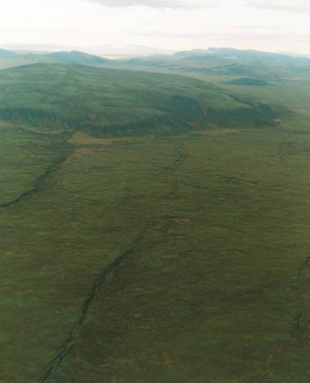
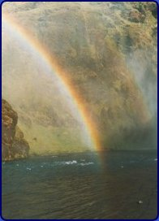

<< retur Island
-
kærlighed ved første blik.
Mit første besøg på Island var i efteråret 1970. Jeg var på vej hjem efter et friår i USA. Jeg skulle mellemlande en times tid i Keflavik og derfra videre til København, hvor mine kollegiekammerater stod og ventede med flag og velkomstbanner.
I et år havde jeg turet rundt i USA og Canada med Greyhound efter
et besøg hos en gammel ven i Florida, som havde foræret
mig opholdet i USA. Nu skulle jeg hjem, mættet med indtryk specielt
efter den sidste uge på Manhattan. I USA havde jeg fundet alt,
men ikke det jeg søgte. Jeg havde måske håbet på
at finde mig selv eller den kvinde, jeg kunne forelske mig i - eller
et emne jeg havde lyst til at skrive speciale om til min afsluttende
eksamen i geografi og geologi ved Københavns Universitet, men
ingen af delene var lykkedes.Så det var en lidt desillusioneret
ung mand på 24, der hin oktoberdag steg ud af flyet i Keflavik
for at strække benene og indånde den friske luft på
Island - og hvilken luft!
Det småsneede, luften var klar og kold, og omkring mig lå
de udstrakte lavamarker med størknede lavabobler, som jeg havde
set, da vi gled ned til landing.

Dette her var i sandhed noget andet end New York - hvilken renhed og
friskhed. Jeg mærkede en mystisk dragning mod det land, jeg ikke
kendte og følte på besynderlig vis, at jeg var kommet hjem
efter en lang, lang rejse - der aldrig havde givet mig det, jeg her
fornemmede intuitivt. Jeg kunne næs-ten ikke få mig selv
til at gå ind i flyet igen uden at efterforske den mystiske dragning
mod dette unikke land. Heldigvis lyttede jeg til min intuition og gik
ind i den enkle lufthavnsbygning og fik ordnet min billet, så
jeg kunne stå af og flyve videre senere.
Jeg tog bussen ind til Reykjavik igennem de øde lavamarker, og
min fascination voksede for hver kilometer, jeg kørte. Her var
jo ingen huse og mennesker, og lavamarkerne så ud, som om de lige
var strømmet ud af jordens indre og var størknet i bobler
med revnet skorpe, som brød der er bagt for længe. Irgrønt
mos lyste op i lavningerne. Jeg fik følelsen af at være
landet på Månen.
I Reykjavik tog sneen til, og jeg logerede mig ind på Hotel Vik i byens centrum. Sneen faldt nu tæt og dæmpede alle lyde bortset fra de fly, der strøg lavt hen over taget før landingen i indenriglufthavnen lige bag hotellet og søen.
Næste dag tog jeg en lille bus mod Stykkishólmur på
Snæfellsnes. Jeg ville væk fra Reykjavik og opleve stilheden
ude på landet. Jeg var alene i bussen. Vi kørte nordpå
langs Hvalfjördur og Borgarfjördur, og i Borgarnes stod en
ung pige på bussen og satte sig over for mig. Hun havde grønne
øjne og skulle til Stykkishólmur som jeg selv.
Hun var 19 år gammel og hed Anna og skulle besøge sine
forældre, der passede hendes lille søn på et år.
Hun var alene med ham. På Snæfellsnes sneede det kraftigt,
da vi kørte over Grimsfjall. Vi kom i snak, og da jeg ikke havde
noget sted at bo, blev jeg inviteret med hjem til hendes forældre
i Stykkis-hólmur. Hun viste mig byen, der lå lige ud til
Breidafjördur og fortalte mig om troldkvinden, der havde kastet
en klippeblok, somhavde kilet sig fast mellem to skær lige ud
for havnen - heldigt nok for Stykkisholm, for det havde skabt den perfekte
naturhavn. I byen lå der også et fransiscansk nonnekloster
og et hospital, hvor nonnerne arbejdede.
Annas øjne var blevet mere grønne i skæret fra Breidafjördur,
hvor Flatey lå i det fjerne. Hun fortalte mig om Flateybogen og
Erik den Røde, som om det var en bog og en person, hun havde
stiftet bekendt-skab med i går. Hun havde en underfundig humor
og en ro, jeg aldrig havde mødt hos amerikanske piger. Jeg var
kommet hjem - og huset tog vel imod mig og skaffede mig et værelse
lige ud til Breida-fjördur. Her oplevede jeg en magisk stilhed.
Havet skvulpede sagte lige neden for mit vindue, stjernerne lyste i
den klare polarnat, og Nordstjernen gav mig retningen mod nord. Det
var den vej, jeg skulle følge.
Over min seng hang et billede af en lille dreng, der bange står på en skrøbelig bro. En pige holder hans hånd. Det tordner og lyner, og under den skrøbelige bro bruser elven iskoldt af sted. En engel står bag dem begge med en løftet beskyttende hånd.
Island var for mig blevet en bro- en bro mellem den nye og den gamle
verden. Her følte jeg mig tryg og kunne for en stund hvile på
brohovedet her midt ude i det store kolde hav. For 1000 år siden
var det omvendt. Dengang agerede Island som bro mellem den gamle og
den nye verden
Jeg blev nogle dage i Stykkishólmur, indtil fjeldet blev farbart igen og fulgtes med Anna tilbage til Reykjavik og boede på Hotel Vik og var sammen med hende, når hun havde fri.
Vi gik op på Esja-fjeldet over for havnefronten og tog bussen
til Hveragerdi og så på drivhuse og varme kilder. Annas
øjne rummede det hele- både lavamarkens øde og vulkanernes
ild. Hun vidste alt om sin slægts historie igennem de sidste mange
hundrede år og kendte sit land ud og ind. Det var nyt for mig
at møde et menneske, der ikke var farvet af en politisk ideologi,
som dele af det intellektuelle universitetsmiljø i Danmark var
blevet så besat af efter 68.
På Universitetet opsøgte jeg på hendes råd professor Sigurdur Thorarinsson, som var verdenskendt vulkanolog og spurgte ham til råds om at skrive et speciale om Island. Det var der ikke mange, der havde gjort sagde han, og vejen lå åben for mig-også der. Det blev så til et speciale om Islands befolkning.
Island gik mig i blodet og har været det siden. Det er blevet
til over 40 års besættelse af et land, der altid giver mig
følelsen af at komme hjem, når flyet lander i Keflavik,
og jeg ser de øde lavamarker omkring mig. På Island skifter
jeg identitet, lader op og føler mig yngre. På Island er
jeg ofte nær en helt anden tilværelsesforståelse-
nær en form for transcendens. Men det er som med regnbuen, der
flytter sig, når man bevæger sig hen imod den for at gribe
den. Island er regnbuernes land.

Regnbue ved Skogafoss © Copyright Morten Stender << retur
| |